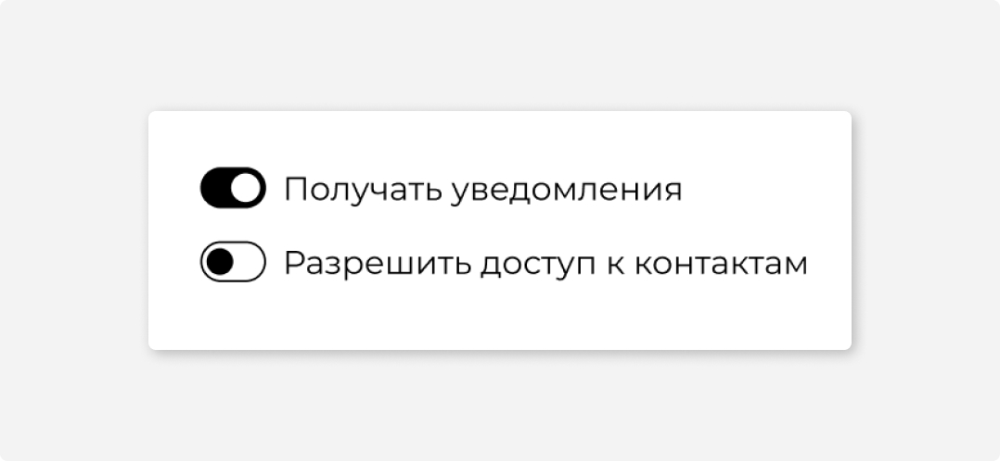
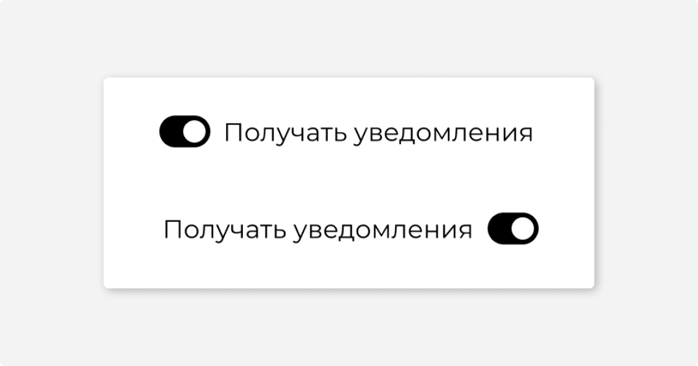
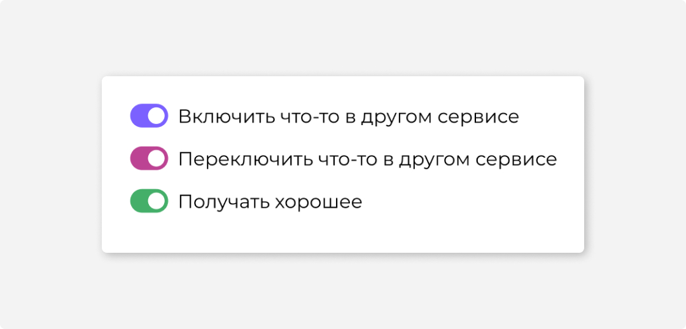

#1
Назначение
Тогл переключает состояния. Например, включает или отключает уведомления в настройках.
Функционально тогл — аналог чекбокса, но контекст их использования может отличаться.
Тогл нельзя использовать для выбора элементов в списке. Например, выбрать несколько писем.
Тогл больше и заметнее чекбокса. Хорошо, когда на странице 1 тогл, максимум 2–3.
#2
Описание работы
Чтобы переключить тогл, нужно кликнуть на сам контрол или его название.
При переключении тогла эффект наступает сразу. Поэтому тогл не нуждается в кнопке «Сохранить».
Если тогл нельзя использовать, заблокируйте его. Валидация не нужна.
#3
Размеры и расположение
В отличие от чекбокса, тогл может располагаться как слева, так и справа от названия. Если тоглов несколько, лучше их ставить слева от текста.
#4
Цвет
Цвет тогла во включенном состоянии — как у чекбоксов, радиокнопок и ссылок. Можно использовать фирменный цвет, для всех тоглов в сервисе. Можно использовать позитивный цвет там, где этого требует сценарий.
#5
Состояния